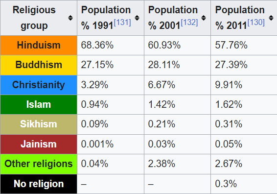
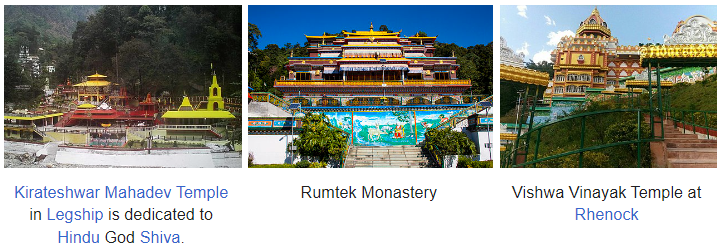

RELIGION

According to the 2011 census, 57.8% follow Hinduism, making it the state's majority religion.
Buddhism is followed by 27.4% of the population, while Christianity is followed by 9.9%.
Between 2001 and 2011, Christianity was the fastest growing religion in the state,
going from 6.67% to 9.91% of the population.
It was thus the fourth state with the highest Christian growth in the period, behind
only Arunachal Pradesh, Manipur and Meghalaya.
As of 2014, the Evangelical Presbyterian Church of Sikkim is the largest Christian denomination in Sikkim.
Hinduism, on the other hand, declined from 60.93% to 57.76% of the population in the same period.
Sikkim was the fourth state with the biggest decline in the percentage of Hindus,
behind only Arunachal Pradesh, Manipur and Assam.
Vajrayana Buddhism, which accounts for 27.3% of the population,
is Sikkim's second-largest, yet most prominent religion.
Prior to Sikkim's becoming a part of the Indian Union,
Vajrayana Buddhism was the state religion under the Chogyal.
Sikkim has 75 Buddhist monasteries, the oldest dating back to the 1700s.
The public and visual aesthetics of Sikkim are executed in shades of Vajrayana
Buddhism and Buddhism plays a significant role in public life,
even among Sikkim's majority Nepali Hindu population.
Other religious minorities include Muslims of Bihari ethnicity and Jains,
who each account for roughly 1% of the population.
The traditional religions of the native Sikkimese account for
much of the remainder of the population.
Although tensions between the Lepchas and the Nepalese escalated during the
merger of Sikkim with India in the 1970s, there has never been any major degree of
communal religious violence, unlike in other Indian states.
The traditional religion of the Lepcha people is Mun, an animist practice which coexists with Buddhism and Christianity.
